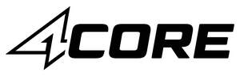

Trade Mark Journal No.2025/049 5 December 2025
UK00004285540 29 October 2025 (5,21,25,32,35)

- Class 5
- Protein powder dietary supplements; Protein dietary supplements; Whey protein dietary supplements; Liquid dietary supplements; Dietary supplements in powder form; Liquid nutritional supplements; Protein supplements; Dietary and nutritional supplements; Dietary supplements consisting of vitamins; Dietary supplements; Mineral nutritional supplements; Nutritional supplements; Energy gels (dietary supplements); Liquid vitamin supplements; Dietary supplement drinks; Dietary supplement drink mixes; Powdered fruit-flavored dietary supplement drink mix; Powdered nutritional supplement energy drink mix; Vitamin and mineral supplements; Vitamin supplements; Powdered nutritional supplement drink mix; Dietary and nutritional preparations; Protein supplement shakes; Dietary supplemental drinks; Dietary supplements promoting fitness and endurance; Vitamin and mineral preparations; Food supplements for sportsmen; Fitness and endurance supplements.
- Class 21
- Drinks containers; Bottles; Drinking bottles; Drinking bottles for sports; Containers for beverages; Shaker bottles sold empty.
- Class 25
- Clothing; Sportswear; Sweatshirts; Hoodies; Athletic clothing; Sweatpants; T-shirts.
- Class 32
- Isotonic drinks; Isotonic non-alcoholic drinks; Energy drinks; Carbonated soft drinks; Carbonated non-alcoholic drinks; Fruit-flavored soft drinks; Soft drinks for energy supply; Low-calorie soft drinks; Isotonic beverages; Non-alcoholic carbonated beverages; Fruit flavoured carbonated drinks; Non-alcoholic flavored carbonated beverages; Non-alcoholic drinks; Energy drinks containing caffeine; Fruit flavored soft drinks; Flavoured carbonated beverages; Protein-enriched sports beverages; Carbohydrate drinks; Fruit-flavored beverages; Fruit-based beverages; Fruit flavored drinks; Energy drinks [not for medical purposes]; Fruit-flavoured beverages; Fruit flavoured drinks; Sports drinks; Isotonic beverages [not for medical purposes]; Non-alcoholic drinks enriched with vitamins and mineral salts; Sports drinks containing electrolytes; Powders used in the preparation of fruit-based drinks.
- Class 35
- Retail services in relation to dietary supplements; Wholesale services in relation to dietary supplements; Online retail store services relating to clothing; Retail services relating to food; Online retail services relating to clothing; Unmanned retail store services relating to drink; Online retail store services in relation to clothing; Mail order retail services related to non-alcoholic beverages; Retail services in relation to non-alcoholic beverages; Providing consumer product information relating to food or drink products; Retail services in relation to clothing; Advertising services to promote the sale of beverages; Wholesale services in relation to non-alcoholic beverages; Retail services in relation to dietetic preparations.
4CORE NUTRITION LTD